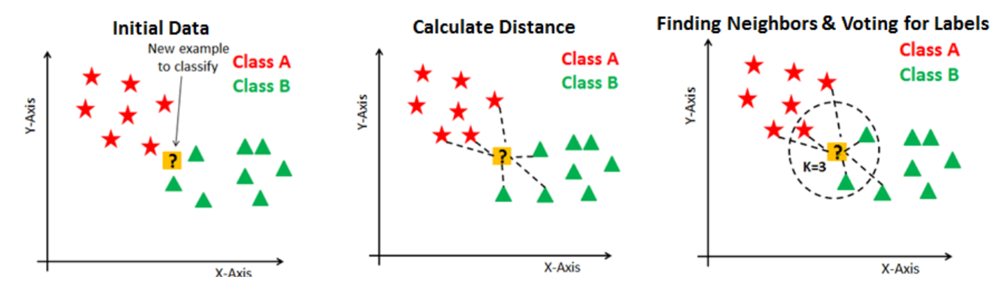
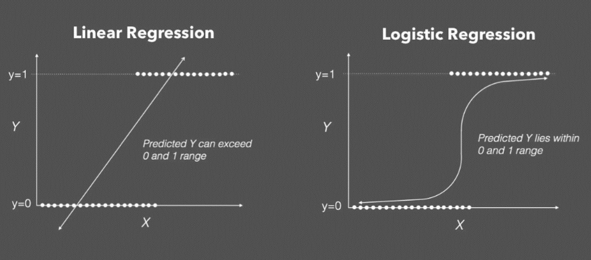
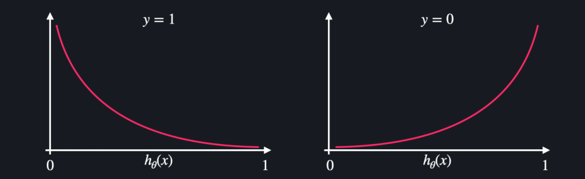

Classification 1
Table of contents
Classification
: supervised learning 중, 종속변수가 범주형 변수인 문제를 해결하는 방식.
- cf) 종속변수가 연속 변수인 문제는 Linear Regression 모형이 적합
*Classification problems
- Binary classification: 종속변수의 값이 2가지 → 보통 0과 1로 표현
- ex) 어떤 사람이 감기인지 아닌지
- ex) 영화가 성공인지 실패인지
- ex) 소비자가 A제품을 사는지 안사는지
- Multiclass classification: 종속변수 값이 3가지 이상.
- ex) 뉴스 기사의 카테고리 분류
- ex) 영화의 장르 분류
- ex) 학점 분류 (A ~ F)
KNN (K Nearest Neighbors)
: 가장 가까운 K개의 neighbor가 속한 class로 배정하는 classification 방식.
기본 개념
- ex) K=1이라면, 새로운 datapoint의 class는 가장 가까운 하나의 neighbor의 class에 따라 배정된다.
- ex) K=5라면, 새로운 datapoint의 class는 가장 가까운 5개의 neighbor 중 가장 많은 수가 속한 class에 따라 배정된다.
- 보통, class(배정하게 되는 집단)의 수가 짝수일 경우, K는 홀수로 한다
- 최적의 K값은 dataset마다 다르므로, 다양한 K값일 때의 성능을 체크해보는 게 좋다

(출처: datacamp)
*vector간 유사도 계산 방법
- Euclidean distance: xy = sqrt(sum((x - y)2))
- x, y는 각각 하나의 벡터(데이터포인트)를 의미
- 가장 기본적인 거리 계산 방식
- 높은 차원에서의 계산에는 효과가 크지 않을 수 있다 (cosine 유사도가 더 좋은 결과를 낼 수 있음)
- Cosine 유사도: cosθ = x∙y / lxllyl
- x∙y는 벡터 간 내적곱, lxl: 원점에서 벡터x까지의 거리
- cosθ 값이 1에 가까울수록 벡터 사이 유사도가 큰 것. (cosθ가 1에 가까울수록 사이각이 0에 가까움)
- 정확히 ‘길이’의 차이를 반영하는 것은 아니라는 단점 (사이각이 작아도 두 벡터 간 거리가 멀 수 있음)
- 하지만 normalization / standardization 과정을 거치고 나면 길이의 차이는 유의미하지 않기 때문에 cosine 유사도로 벡터 간 유사도를 충분히 구분할 수 있음.
scikit-learn으로 구현하기
from sklearn.datasets import load_iris # iris 데이터 분러오기
from sklearn.model_selection import train_test_split # 데이터셋을 training set / test set 나누기 위한 함수
from sklearn.neighbors import KNeighborsClassifier # KNN Classifier
import pandas as pd
1. 데이터 준비
iris_dataset = load_iris() # 데이터셋을 가져와준다
+) print(iris_dataset.DESCR)를 해주면 데이터셋에 대한 정보를 살펴볼 수 있음
- 독립변수: Sepal(꽃받침) length, Sepal width, Petl(꽃잎) length, Petal width의 4개
- 결과변수: Iris-Setosa, Iris-Versicolour, Iris-Virginica 이렇게 3종류
- 데이터셋에는 3종류의 붓꽃(iris)가 1/3씩(=50개씩) 포함되어 있음
→ 데이터 정리
# X에 boston dataset의 입력변수들 & 해당 입력변수 명칭들 정리
X = pd.DataFrame(iris_dataset.data, columns=iris_dataset.feature_names)
X.head()
| sepal length (cm) | sepal width (cm) | petal length (cm) | petal width (cm) | |
|---|---|---|---|---|
| 0 | 5.1 | 3.5 | 1.4 | 0.2 |
| 1 | 4.9 | 3 | 1.4 | 0.2 |
| 2 | 4.7 | 3.2 | 1.3 | 0.2 |
| 3 | 4.6 | 3.1 | 1.5 | 0.2 |
| 4 | 5 | 3.6 | 1.4 | 0.2 |
# 목표변수도 dataframe으로 정리
y = pd.DataFrame(iris_dataset.target, columns=['Class'])
y.head()
| Class | |
|---|---|
| 0 | 0 |
| 1 | 0 |
| 2 | 0 |
| 3 | 0 |
| 4 | 0 |
y.Class.unique() ## 0: Iris-Setosa, 1: Iris-Versicolour, 2: Iris-Virginica
array([0, 1, 2])
2. train_test_split
X_train, X_test, y_train, y_test = train_test_split(X, y, test_size=0.2, random_state=5) # 20%를 test set으로 선택
# 잘 나뉘었나 확인
print(X_train.shape)
print(X_test.shape)
print(y_train.shape)
print(y_test.shape)
(120, 4)
(30, 4)
(120, 1)
(30, 1)
3. 모델 학습시키기
y_train = y_train.values.ravel() #ravel(): 다차원 array를 1차원 array로 평평하게 펴주는 함수. 안써도 되지만 안쓰면 경고가 뜸.
model = KNeighborsClassifier(n_neighbors=5) # 가장 근접한 5개 이웃의 class에 따라 분류하겠다는 뜻
model.fit(X_train, y_train)
KNeighborsClassifier(algorithm='auto', leaf_size=30, metric='minkowski',
metric_params=None, n_jobs=None, n_neighbors=5, p=2,
weights='uniform')
- metric: 사용할 distance metric. (벡터 간 유사도(거리)를 어떤 방식으로 측정할 것인지)
- default=’minkowski’ (+. 가능한 metrics)
- minkowski 방식에서 p=2 (default)면 standard Euclidean metric와 동일한 계산식
4. test data로 성능 체크
model.predict(X_test) # 어떻게 분류했나 확인
array([1, 2, 2, 0, 2, 1, 0, 2, 0, 1, 1, 2, 2, 2, 0, 0, 2, 2, 0, 0, 1, 2,
0, 2, 1, 2, 1, 1, 1, 2])
y_test['class'].to_numpy() ## 실제 y_test와 비교
array([1, 2, 2, 0, 2, 1, 0, 1, 0, 1, 1, 2, 2, 2, 0, 0, 2, 2, 0, 0, 1, 2,
0, 1, 1, 2, 1, 1, 1, 2])
# 몇 퍼센트가 올바르게 분류되었는지 확인
model.score(X_test, y_test)
0.9333333333333333
약 93% 정도가 올바르게 분류되었다는 의미
Logistic Regression
기본 개념

(출처: incredible.ai)
-
가설 함수: sigmoid 함수 (학습 = 데이터에 가장 잘 맞는 sigmoid 함수를 찾는 것)
- sigmoid 함수는 0과 1 사이의 연속적인 결과값을 갖기에 ‘regression(회귀)’라고 이름이 붙지만, 보통 sigmoid 함수의 결과값이 0.5보다 큰지 작은지를 보고 ‘분류’를 하는 방식으로 주로 사용한다
- 0과 1 어느 쪽에 가까운지를 판별하는 binary classification 모델이지만, 3개 이상의 분류에도 사용 가능하다
-
*3개 이상의 Class를 분류하는 방법:
(ex. 메일을 업무 메일 / 사적 메일 / 스팸 메일 3종류로 분류할 때)- 업무 메일인지 아닌지 판별하는 활성 함수 → 업무 메일일 확률을 구함
- 사적 메일인지 아닌지 판별하는 활성 함수 → 사적 메일일 확률을 구함
- 스팸 메일인지 아닌지 판별하는 활성 함수 → 스팸 메일일 확률을 구함
- 각 datapoint를 가장 확률이 높은 쪽으로 분류. (ex. 스팸 메일일 확률이 가장 높다면, 스팸 메일로 분류)
-
손실함수: 로그 손실 = log loss = cross entropy

(출처: codeit)- y가 0인 경우: 0에 가깝게 분류할수록 로그 손실이 0에 가깝고, 1에 가깝게 분류할수록 로그 손실이 무한대에 가까워짐
- y가 1인 경우: 1에 가깝게 분류할수록 로그 손실이 0에 가깝고, 0에 가깝게 분류할수록 로그 손실이 무한대에 가까워짐
- sklearn의 Logistic Regression은 Gradient Descent 방식으로 손실함수가 0에 가까워지는 점을 찾는다
scikit-learn으로 구현하기
from sklearn.datasets import load_iris
from sklearn.model_selection import train_test_split
from sklearn.linear_model import LogisticRegression
import pandas as pd
1. 데이터 준비
# KNN에서와 동일하게 iris data 사용
iris_data = load_iris()
# dataframe으로 옮기기
X = pd.DataFrame(iris_data.data, columns=iris_data.feature_names)
y = pd.DataFrame(iris_data.target, columns=['class'])
X.head()
| sepal length (cm) | sepal width (cm) | petal length (cm) | petal width (cm) | |
|---|---|---|---|---|
| 0 | 5.1 | 3.5 | 1.4 | 0.2 |
| 1 | 4.9 | 3 | 1.4 | 0.2 |
| 2 | 4.7 | 3.2 | 1.3 | 0.2 |
| 3 | 4.6 | 3.1 | 1.5 | 0.2 |
| 4 | 5 | 3.6 | 1.4 | 0.2 |
y.head()
| Class | |
|---|---|
| 0 | 0 |
| 1 | 0 |
| 2 | 0 |
| 3 | 0 |
| 4 | 0 |
2. train_test_split & 학습
X_train, X_test, y_train, y_test = train_test_split(X, y, test_size=0.2, random_state=5)
y_train = y_train.values.ravel() #ravel(): 다차원 array를 1차원 array로 평평하게 펴주는 함수.
model = LogisticRegression(solver='saga', max_iter=2000)
- solver: 모델을 최적화할 때 어떤 알고리즘을 사용할지 선택하는 것. (=어떤 경사하강법을 사용할지)
- SAGA: SAG(Stochastic Average Gradient) 알고리즘을 개선한 버전의 알고리즘. 유사하지만 더 성능이 좋다고 함
- +. 가능한 solver (dataset의 특성에 맞게 적절히 선택)
- default는 lbfgs.
- max_iter: 최적화 과정을 몇 번 반복할 지를 정해주는 것.
- max_iter=2000이라고 해도 만약 2000번 돌기 전에 최적화되면 그 때 이미 멈춘다
- default는 100.
model.fit(X_train, y_train)
LogisticRegression(C=1.0, class_weight=None, dual=False, fit_intercept=True,
intercept_scaling=1, l1_ratio=None, max_iter=2000,
multi_class='auto', n_jobs=None, penalty='l2',
random_state=None, solver='saga', tol=0.0001, verbose=0,
warm_start=False)
- C: Inverse of regularization strength. 0 ~ 1 사이의 float 값을 지정할 수 있으며, 기본 세팅은 1.0
- 숫자가 작을수록 penalty를 강하게 준다는 뜻 (= stronger regularization)
-
λ = 1 / C→ C가 작을수록 λ (penalty)가 커진다 - λ는 θ값(변수별 가중치)에 붙는 penalty의 개념. (θ값이 너무 커지는 것을 방지해준다)
- penalty: L1과 L2 Regularization 중 어느 것을 선택할지를 의미. (default는 L2)
- (Regularization에 대해서는 추후 자세히 설명 예정)
- multi_class: default로 auto라고 되어 있는데, binary problem이거나 solver = ‘liblinear’인 경우에는 ‘ovr’로 선택하고, 그 외에는 ‘multinomial’로 선택해준다
- 이 경우, multiclass problem이므로 알아서 ‘multinomial’로 선택되었을 것.
3. test data로 성능 체크
model.predict(X_test) # 어떻게 분류했나 확인
array([1, 2, 2, 0, 2, 1, 0, 2, 0, 1, 1, 2, 2, 2, 0, 0, 2, 2, 0, 0, 1, 2,
0, 1, 1, 2, 1, 1, 1, 2])
y_test['class'].to_numpy() ## 실제 y_test와 비교
array([1, 2, 2, 0, 2, 1, 0, 1, 0, 1, 1, 2, 2, 2, 0, 0, 2, 2, 0, 0, 1, 2,
0, 1, 1, 2, 1, 1, 1, 2])
# 몇 퍼센트가 올바르게 분류되었는지 확인
model.score(X_test, y_test)
0.9666666666666667
약 97% 정도가 올바르게 분류되었다는 의미